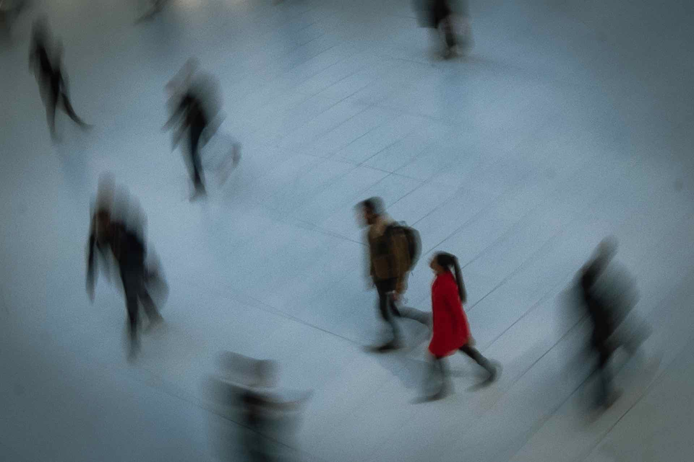

Approach

Portraits / Streets / Events
Moments of life
A focused portfolio for showing selected work, telling the story behind the frame
04
selected frames
03
shoot styles
02
cities shot
A rotating set of favorites, updated as new frames get edited.
Selected Work
Frames that hold the feeling.
01
Portrait Sessions
Editorial-feeling portraits for personal brands, artists, and families.
02
City Walks
Street sets built around texture, timing, shadow, and movement.
03
Gatherings
Events covered with quiet attention to faces, gestures, and atmosphere.
Now Booking
Have a shoot in mind?
Share the kind of session you want, the location, and the date. This section can connect to email, Instagram, or a booking form.